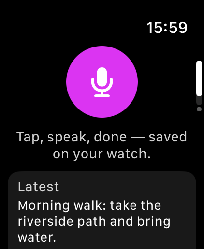

Capture
Open VoxWhisper and tap the microphone. Use watchOS dictation or text entry, then tap Done.
Dictate a text note on your wrist. Read it later. Send it when it matters.
Get VoxWhisper on the App Store
Apple Watch · watchOS 10 or later · Free with optional Pro
A
Watch app, not an iPhone note-taking app.

Open VoxWhisper and tap the microphone. Use watchOS dictation or text entry, then tap Done.
Your text note is saved on the watch. Open Notes whenever you need the full text.
Open a note and tap Send. Choose an available app in the watch’s system share sheet.
Current prices and terms appear on Apple Watch before you subscribe. Pro audio memos are not automatically transcribed into text.
VoxWhisper runs on Apple Watch. Open the App Store on your watch and search for VoxWhisper, or follow the App Store link and install it on your watch. There is no standalone iPhone editor.
Text notes use Apple’s watchOS dictation. Pro audio memos are a separate recording and playback feature; they stay on the watch and are not automatically transcribed.
Text is saved locally. Eligible text syncs through your own Apple Account’s iCloud key-value store, subject to its limits. Audio memos stay on the watch. The developer receives no note or recording content.
Yes. Open the text note and tap Send. Available destinations depend on the apps and accounts configured on your watch.
Manage the subscription through your Apple Account subscriptions. Deleting the app does not cancel a subscription. Keep the app installed if you need its locally stored notes or audio.
Tell us your Watch model, watchOS version and the step that did not work. Please do not include private note content.
Contact support